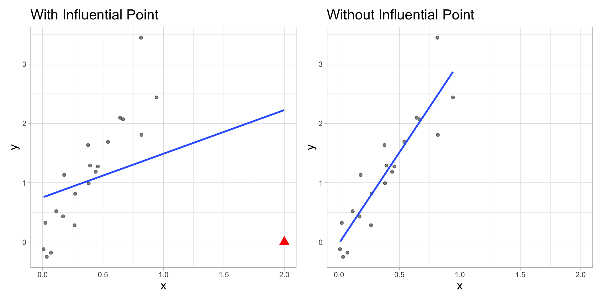
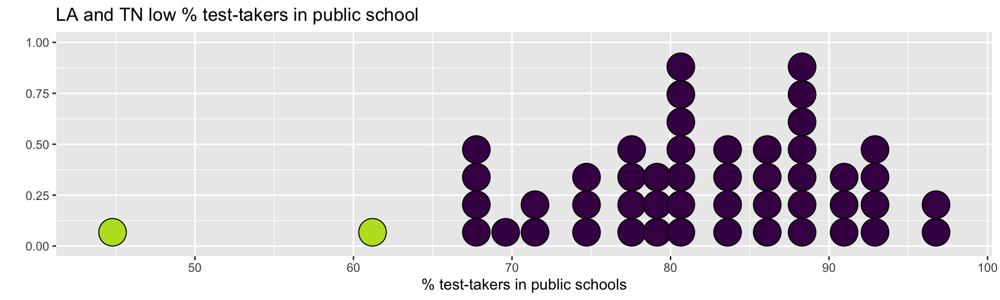
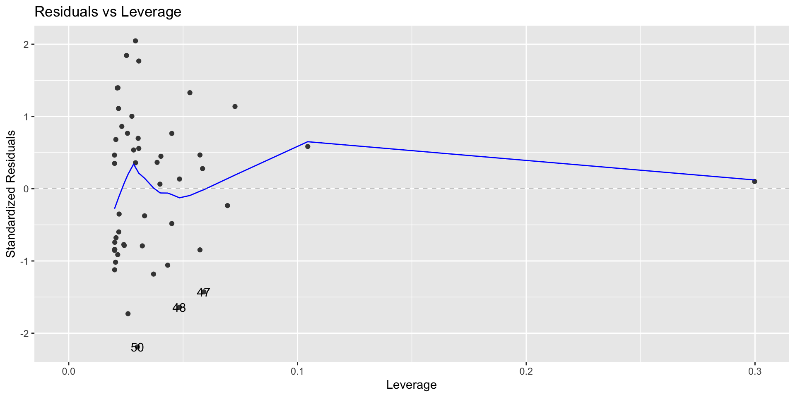
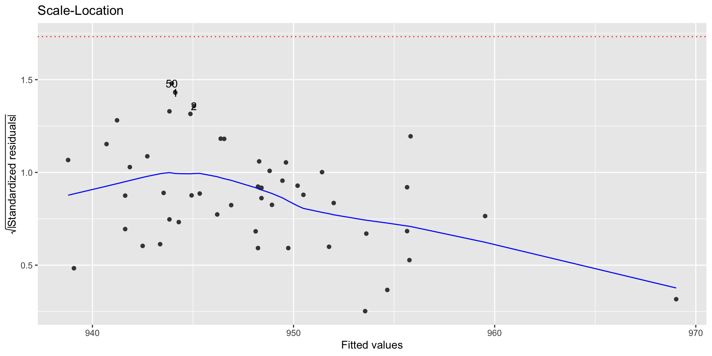
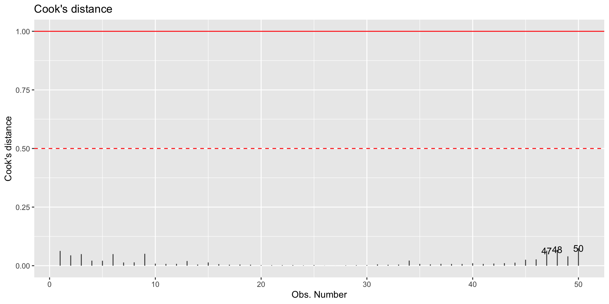

# A tibble: 1 × 2
a b
<dbl> <dbl>
1 1 2Model Diagnostics and Exam 1 Review
STA 210 - Summer 2022
Yunran Chen
Announcements
- Exam 1 opens today at 1:00 pm and ends on Monday, May 23 at 11:59pm.
Feedback from submissions so far
- You must submit a PDF (not HTML) to Gradescope
- You must tag your pages when you upload to Gradescope – if you don’t know how to do this, please ask well before the deadline!
- You must not refer to keys distributed in previous semesters of the course – much of what we’re doing is different and some of it is the same. If you need help, please ask!
Exam 1
- Instructions can be found at website
- Covers everything we’ve done so far
- Any clarification questions for the exam?
- Post on Sakai Conversations, post to “Instructors in this site”
Interpretation on CI
We are 95% confident that, as xx increase by 1 unit, the model predicts xx increase/decrease [,] on average.
We are 95% confident that mean sale price of Duke Forest houses that are 2,800 square feet is between XX and XX.
Tips on R programming
The test values are 1 and 2.
Outliers and influential points
Outliers
- Boxplot
- Standard residuals

Identifying influential points
- Leverage
- Standardized residuals
- Cook’s Distance
Influential Point
An observation is influential if removing it substantially changes the coefficients of the regression model
Influential points
Influential points have a large impact on the coefficients and standard errors used for inference
These points can sometimes be identified in a scatterplot if there is only one predictor variable
- This is often not the case when there are multiple predictors
We will use measures to quantify an individual observation’s influence on the regression model
- leverage, standardized residuals, and Cook’s distance
Model diagnostics in R
Use the augment function to output the model diagnostics (along with the predicted values and residuals)
- response and predictor variables in the model
.fitted: predicted values.se.fit: standard errors of predicted values.resid: residuals.hat: leverage.sigma: estimate of residual standard deviation when the corresponding observation is dropped from model.cooksd: Cook’s distance.std.resid: standardized residuals
Example: Average SAT scores by state
This data set contains the average SAT score (out of 1600) and other variables that may be associated with SAT performance for each of the 50 U.S. states. The data is based on test takers for the 1982 exam.
Response - .vocab[
SAT]: average total SAT scorePredictor - .vocab[
Public]: percentage of test-takers who attended public high schools
.footnote[Data comes from case1201 data set in the Sleuth3 package]
Model
SAT: Augmented Data
Rows: 50
Columns: 9
$ SAT <int> 1088, 1075, 1068, 1045, 1045, 1033, 1028, 1022, 1017, 1011,…
$ Public <dbl> 87.8, 86.2, 88.3, 83.9, 83.6, 93.7, 78.3, 75.2, 97.0, 77.3,…
$ .fitted <dbl> 944.1198, 945.0465, 943.8302, 946.3786, 946.5523, 940.7027,…
$ .resid <dbl> 143.880224, 129.953547, 124.169810, 98.621450, 98.447698, 9…
$ .hat <dbl> 0.02918707, 0.02527061, 0.03063269, 0.02153481, 0.02121224,…
$ .sigma <dbl> 68.89683, 69.51144, 69.72849, 70.63271, 70.63847, 70.77489,…
$ .cooksd <dbl> 0.0629494764, 0.0441056591, 0.0493526954, 0.0214814500, 0.0…
$ .std.resid <dbl> 2.0463672, 1.8445751, 1.7673480, 1.3971689, 1.3944776, 1.32…
$ obs_num <int> 1, 2, 3, 4, 5, 6, 7, 8, 9, 10, 11, 12, 13, 14, 15, 16, 17, …Leverage
Leverage: measure of the distance between an observation’s values of the predictor variables and the average values of the predictor variables for the entire data set
An observation has high leverage if its combination of values for the predictor variables is very far from the typical combination of values in the data
Observations with high leverage should be considered as potential influential points
Calculating leverage
Simple Regression: leverage of the \(i^{th}\) observation \[h_i = \frac{1}{n} + \frac{(x_i - \bar{x})^2}{\sum_{j=1}^{n}(x_j-\bar{x})^2}\]
- Note: Leverage only depends on values of the predictor variable(s)
High Leverage
The sum of the leverages for all points is \(p + 1\)
\(p\) is the number of predictors
In the case of SLR \(\sum_{i=1}^n h_i = 2\)
The “typical” leverage is \(\frac{(p+1)}{n}\)
An observation has high leverage if \[h_i > \frac{2(p+1)}{n}\]
High Leverage
If there is point with high leverage, ask
Is there a data entry error?
Is this observation within the scope of individuals for which you want to make predictions and draw conclusions?
Is this observation impacting the estimates of the model coefficients, especially for interactions?
Just because a point has high leverage does not necessarily mean it will have a substantial impact on the regression. Therefore we need to check other measures.
SAT: Leverage
Observations with high leverage
[1] 0.08autoplot(sat_model,which = 5, ncol = 1) +
geom_vline(xintercept = leverage_threshold, color = "red")# A tibble: 2 × 2
SAT Public
<int> <dbl>
1 999 61.2
2 975 44.8Why do you think these observations have high leverage?
Let’s dig into the data
Standardized residuals
What is the best way to identify outliers (points that don’t fit the pattern from the regression line)?
Look for points that have large residuals
We want a common scale, so we can more easily identify “large” residuals
We will look at each residual divided by its standard error
Standardized residuals
\[std.res_i = \frac{y_i - \hat{y}_i}{\hat{\sigma}_\epsilon\sqrt{1-h_i}}\]
- Standardized residuals are produced by
augmentin the column.std.resid
Standardized residuals
Observations with high leverage tend to have low values of standardized residuals because they pull the regression line towards them
Using standardized residuals
Observations that have standardized residuals of large magnitude are outliers, since they don’t fit the pattern determined by the regression model
An observation is a potential outlier if its standardized residual is beyond \(\pm 3\).
Make residual plots with standardized residuals to make it easier to identify outliers
Motivating Cook’s Distance
An observation’s influence on the regression line depends on
How close it lies to the general trend of the data - (Standardized residual)
Its leverage - \(h_i\)
Cook’s Distance is a statistic that includes both of these components to measure an observation’s overall impact on the model
Cook’s Distance
Cook’s distance for the \(i^{th}\) observation
An observation with large \(D_i\) is said to have a strong influence on the predicted values
An observation with
- \(D_i > 0.5\) is moderately influential
- \(D_i > 1\) is very influential
Cook’s Distance
Using these measures
Standardized residuals, leverage, and Cook’s Distance should all be examined together
Examine plots of the measures to identify observations that are outliers, high leverage, and may potentially impact the model.
What to do with outliers/influential points?
It is OK to drop an observation based on the predictor variables if…
It is meaningful to drop the observation given the context of the problem
You intended to build a model on a smaller range of the predictor variables. Mention this in the write up of the results and be careful to avoid extrapolation when making predictions
What to do with outliers/influential points?
It is not OK to drop an observation based on the response variable
These are legitimate observations and should be in the model
You can try transformations or increasing the sample size by collecting more data
–
In either instance, you can try building the model with and without the outliers/influential observations